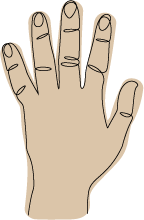
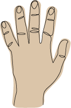

NICE TO MEET YOU!
My name is Katherine but you can call me Kathy.
I am currently an aspiring UX/UI designer who is interested in design-centered problem solving.
I received my B.A. in psychology from UCR. Although I enjoyed learning about the human mind, I
wanted to pursue a more creative avenue. After I graduated I took some graphic design classes at my
local community college. Wanting to pursue design more seriously, my instructor recommended I look
into UX/UI and that brought me to where I am today.
I love to be creative whether that is illustrating or solving problems. I feel encouraged to grow in
an environment of authenticity and being challenged creatively.
FUN FACTS ABOUT ME
 

- I love doing puzzles. I think it helps me be more detail-oriented.
- Currently, I am into illustrating portraits of people in my life.
- I’m left handed, which might explain my need for being a creative.